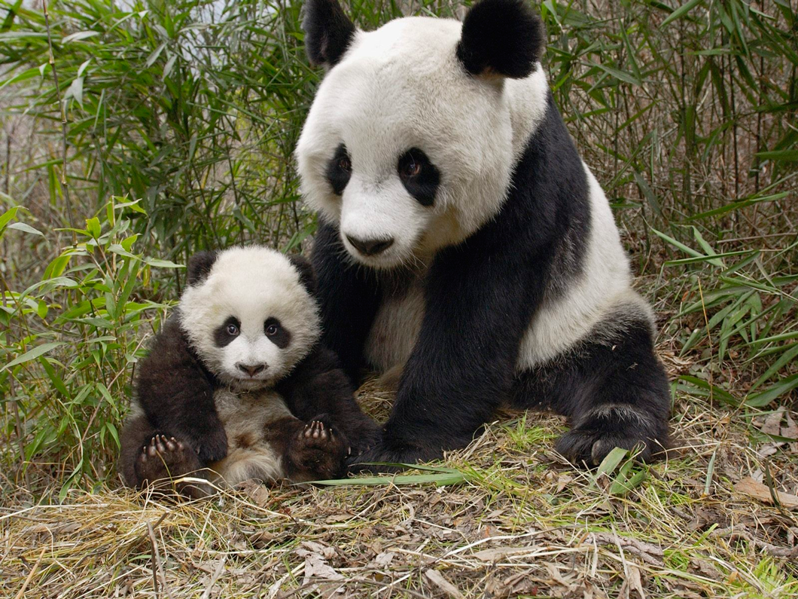

October 26
Hey the Panda's Just Ate Something
An enormous puppy was looking down at her with large round eyes, and feebly stretching out one paw, trying to touch her. 'Poor little thing!' said Alice, in a coaxing tone, and she tried hard to whistle to it; but she was terribly frightened all the time at the thought that it might be hungry, in which case it would be very likely to eat her up in spite of all her coaxing.

Hardly knowing what she did, she picked up a little bit of stick, and held it out to the puppy; whereupon the puppy jumped into the air off all its feet at once, with a yelp of delight, and rushed at the stick, and made believe to worry it; then Alice dodged behind a great thistle, to keep herself from being run over; and the moment she appeared on the other side, the puppy made another rush at the stick, and tumbled head over heels in its hurry to get hold of it; then Alice, thinking it was very like having a game of play with a cart-horse, and expecting every moment to be trampled under its feet, ran round the thistle again; then the puppy began a series of short charges at the stick, running a very little way forwards each time and a long way back, and barking hoarsely all the while, till at last it sat down a good way off, panting, with its tongue hanging out of its mouth, and its great eyes half shut.
This seemed to Alice a good opportunity for making her escape; so she set off at once, and ran till she was quite tired and out of breath, and till the puppy's bark sounded quite faint in the distance.